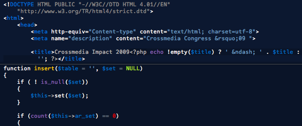

based on Argonaut for TextMate

To install, put Nautilus.css in
~/Library/Application Support/Espresso/Themes
Enjoy!
Nautilus is licensed under a Creative Commons Attribution 3.0 Netherlands License
Thanks to David Lee for creating such a great TextMate theme.